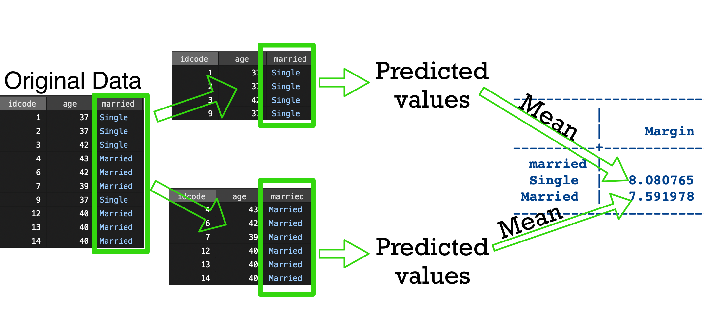

Stata’s margins command
2024-02-15
Post-estimation command
- Stata “estimation” commands are primarily those which fit models.
- E.g.
regress,logit,mixed,xtreg.
- E.g.
- Stata “stores” the most recent estimation command.
marginsis a post-estimation command; meaning it will use the most recently run estimation.marginsitself is not an estimation command.
Categorical variables
. sysuse nlsw88
(NLSW, 1988 extract)
. list in 1
+----------------------------------------------------------------+
1. | idcode | age | race | married | never_married | grade |
| 1 | 37 | Black | Single | Has been married | 12 |
|----------------------------------------------------------------|
| collgrad | south | smsa | c_city |
| Not college grad | Not south | SMSA | Not central city |
|----------------------------------------------------------------|
| industry | occupation | union | wage | hours |
| Transport/Comm/Utility | Operatives | Union | 11.73913 | 48 |
|----------------------------------------------------------------|
| ttl_exp | tenure |
| 10.33333 | 5.333333 |
+----------------------------------------------------------------+Fitting the model
. regress wage i.race
Source | SS df MS Number of obs = 2,246
-------------+---------------------------------- F(2, 2243) = 10.28
Model | 675.510282 2 337.755141 Prob > F = 0.0000
Residual | 73692.4571 2,243 32.8544169 R-squared = 0.0091
-------------+---------------------------------- Adj R-squared = 0.0082
Total | 74367.9674 2,245 33.1260434 Root MSE = 5.7319
------------------------------------------------------------------------------
wage | Coefficient Std. err. t P>|t| [95% conf. interval]
-------------+----------------------------------------------------------------
race |
Black | -1.238442 .2764488 -4.48 0.000 -1.780564 -.6963193
Other | .4677818 1.133005 0.41 0.680 -1.754067 2.689631
|
_cons | 8.082999 .1416683 57.06 0.000 7.805185 8.360814
------------------------------------------------------------------------------| Group | Average |
|---|---|
| White | 8.083 |
| Black | ??? |
| Other | ??? |
| Comparison | Diff. in Averages |
|---|---|
| Black vs White | -1.238 |
| Other vs White | 0.468 |
| Other vs Black | ??? |
Calculating group effects and comparisons
. regress, noheader
------------------------------------------------------------------------------
wage | Coefficient Std. err. t P>|t| [95% conf. interval]
-------------+----------------------------------------------------------------
race |
Black | -1.238442 .2764488 -4.48 0.000 -1.780564 -.6963193
Other | .4677818 1.133005 0.41 0.680 -1.754067 2.689631
|
_cons | 8.082999 .1416683 57.06 0.000 7.805185 8.360814
------------------------------------------------------------------------------\[ wage = \beta_0 + \beta_1\textrm{Black} + \beta_2\textrm{Other} + \epsilon \]
| Group | Average |
|---|---|
| White | 8.083 |
| Black | 8.083 + ( -1.238) = 6.845 |
| Other | 8.083 + 0.468 = 8.551 |
| Comparison | Diff. in Averages |
|---|---|
| Black vs White | -1.238 |
| Other vs White | 0.468 |
| Other vs Black | 0.468 - ( -1.238) = 1.706 |
Changing reference category
. regress wage ib2.race, noheader
------------------------------------------------------------------------------
wage | Coefficient Std. err. t P>|t| [95% conf. interval]
-------------+----------------------------------------------------------------
race |
White | 1.238442 .2764488 4.48 0.000 .6963193 1.780564
Other | 1.706223 1.148906 1.49 0.138 -.5468071 3.959254
|
_cons | 6.844558 .2373901 28.83 0.000 6.379031 7.310085
------------------------------------------------------------------------------
. regress wage ib3.race, noheader
------------------------------------------------------------------------------
wage | Coefficient Std. err. t P>|t| [95% conf. interval]
-------------+----------------------------------------------------------------
race |
White | -.4677818 1.133005 -0.41 0.680 -2.689631 1.754067
Black | -1.706223 1.148906 -1.49 0.138 -3.959254 .5468071
|
_cons | 8.550781 1.124114 7.61 0.000 6.34637 10.75519
------------------------------------------------------------------------------Estimated means
margins does this for us!
| Group | Average |
|---|---|
| White | 8.083 |
| Black | 8.083 + ( -1.238) = 6.845 |
| Other | 8.083 + 0.468 = 8.551 |
. margins race
Adjusted predictions Number of obs = 2,246
Model VCE: OLS
Expression: Linear prediction, predict()
------------------------------------------------------------------------------
| Delta-method
| Margin std. err. t P>|t| [95% conf. interval]
-------------+----------------------------------------------------------------
race |
White | 8.082999 .1416683 57.06 0.000 7.805185 8.360814
Black | 6.844558 .2373901 28.83 0.000 6.379031 7.310085
Other | 8.550781 1.124114 7.61 0.000 6.34637 10.75519
------------------------------------------------------------------------------Differences in estimated means
| Comparison | Diff. In Averages |
|---|---|
| Black vs White | -1.238 |
| Other vs White | 0.468 |
| Other vs Black | 0.468 - ( -1.238) = 1.706 |
. margins race, pwcompare
Pairwise comparisons of adjusted predictions Number of obs = 2,246
Model VCE: OLS
Expression: Linear prediction, predict()
-----------------------------------------------------------------
| Delta-method Unadjusted
| Contrast std. err. [95% conf. interval]
----------------+------------------------------------------------
race |
Black vs White | -1.238442 .2764488 -1.780564 -.6963193
Other vs White | .4677818 1.133005 -1.754067 2.689631
Other vs Black | 1.706223 1.148906 -.5468071 3.959254
-----------------------------------------------------------------Syntax for estimated means
Average outcome per level
Pairwise comparisons between groups
margins [categorical variable], pwcompare(ci) // Produce confidence intervals, default
margins [categorical variable], pwcompare(pv) // Produce p-values- Do not preface the categorical variable with
i.. - In general, binary (0/1) variables can be treated as continuous or categorical in the model. The model is identical either way, but treating them as categorical lets
marginsoperate in this easy fashion.
In the presence of covariates
. regress wage i.married age, noheader
------------------------------------------------------------------------------
wage | Coefficient Std. err. t P>|t| [95% conf. interval]
-------------+----------------------------------------------------------------
married |
Married | -.4958806 .2530888 -1.96 0.050 -.9921934 .0004321
age | -.0692705 .0396596 -1.75 0.081 -.147044 .0085029
_cons | 10.79748 1.568569 6.88 0.000 7.721481 13.87348
------------------------------------------------------------------------------The intercept (_cons) represents the average predicted value when both married is at it’s reference category and wage is identically 0.
. margins married
Predictive margins Number of obs = 2,246
Model VCE: OLS
Expression: Linear prediction, predict()
------------------------------------------------------------------------------
| Delta-method
| Margin std. err. t P>|t| [95% conf. interval]
-------------+----------------------------------------------------------------
married |
Single | 8.085319 .2027826 39.87 0.000 7.687658 8.482981
Married | 7.589439 .151412 50.12 0.000 7.292517 7.886361
------------------------------------------------------------------------------Visualization of margins
Sometimes called “as observed”.
Choices for ways to handle other covariates
- As observed (default)
- Average of predicted outcomes
atmeans- Predicted outcome at average
atspecific values- Predicted outcome at specific values
overgroups- Average of predicted outcomes only within each group
- Combination (if multiple covariates)
Visualization of margins, atmeans
atmeans
. margins married, atmeans
Adjusted predictions Number of obs = 2,246
Model VCE: OLS
Expression: Linear prediction, predict()
At: 0.married = .3579697 (mean)
1.married = .6420303 (mean)
age = 39.15316 (mean)
------------------------------------------------------------------------------
| Delta-method
| Margin std. err. t P>|t| [95% conf. interval]
-------------+----------------------------------------------------------------
married |
Single | 8.085319 .2027826 39.87 0.000 7.687658 8.482981
Married | 7.589439 .151412 50.12 0.000 7.292517 7.886361
------------------------------------------------------------------------------- Means for
marriedare ignored since we’re requesting at specific values ofmarried. - As observed and
atmeansare identical for linear models; but differ for generalized linear models (we’ll see later).
at specific values
We can manually fix the values of other variables in the model.
where <numlist> can be any of:
- space-separated list of values (
3 4 .5 -100) - integers between range (
2/5is equivalent to2 3 4 5) - range with step-by instruction (
3(.5)5is equivalent to3 3.5 4 4.5 5) - any combination of the above (
3 5/7 8(.25)9)
at specific values example
. margins married, at(age = (35(5)45))
Adjusted predictions Number of obs = 2,246
Model VCE: OLS
Expression: Linear prediction, predict()
1._at: age = 35
2._at: age = 40
3._at: age = 45
------------------------------------------------------------------------------
| Delta-method
| Margin std. err. t P>|t| [95% conf. interval]
-------------+----------------------------------------------------------------
_at#married |
1#Single | 8.373011 .2628879 31.85 0.000 7.857482 8.88854
1#Married | 7.87713 .2226589 35.38 0.000 7.440491 8.31377
2#Single | 8.026658 .2051185 39.13 0.000 7.624416 8.4289
2#Married | 7.530778 .1554066 48.46 0.000 7.226022 7.835534
3#Single | 7.680306 .3060744 25.09 0.000 7.080087 8.280524
3#Married | 7.184425 .2781542 25.83 0.000 6.638959 7.729892
------------------------------------------------------------------------------Visualization of margins, at(...)
at without categorical variables
We can also use at with continuous variables without a categorical variable.
. margins, at(age = (35(5)45))
Predictive margins Number of obs = 2,246
Model VCE: OLS
Expression: Linear prediction, predict()
1._at: age = 35
2._at: age = 40
3._at: age = 45
------------------------------------------------------------------------------
| Delta-method
| Margin std. err. t P>|t| [95% conf. interval]
-------------+----------------------------------------------------------------
_at |
1 | 8.054641 .2045676 39.37 0.000 7.653479 8.455802
2 | 7.708288 .125879 61.24 0.000 7.461436 7.95514
3 | 7.361935 .2617012 28.13 0.000 6.848734 7.875137
------------------------------------------------------------------------------In this case, married is treated just like age was in the previous “as observed” example - held constant.
Visualization of margins, over(...)
over
. margins, over(married)
Predictive margins Number of obs = 2,246
Model VCE: OLS
Expression: Linear prediction, predict()
Over: married
------------------------------------------------------------------------------
| Delta-method
| Margin std. err. t P>|t| [95% conf. interval]
-------------+----------------------------------------------------------------
married |
Single | 8.080765 .2027658 39.85 0.000 7.683137 8.478394
Married | 7.591978 .151405 50.14 0.000 7.295069 7.888887
------------------------------------------------------------------------------Combining some of these effects
We can combine some of these when we have multiple predictors. For example,
. regress wage age i.married i.south, noheader
------------------------------------------------------------------------------
wage | Coefficient Std. err. t P>|t| [95% conf. interval]
-------------+----------------------------------------------------------------
age | -.0675817 .0393325 -1.72 0.086 -.1447135 .0095502
|
married |
Married | -.5039005 .2509983 -2.01 0.045 -.9961138 -.0116873
|
south |
South | -1.514432 .2438214 -6.21 0.000 -1.992572 -1.036293
_cons | 11.37168 1.558336 7.30 0.000 8.315744 14.42761
------------------------------------------------------------------------------Combining some of these effects, 2
. margins married, at(south = (1)) atmeans
Adjusted predictions Number of obs = 2,246
Model VCE: OLS
Expression: Linear prediction, predict()
At: age = 39.15316 (mean)
0.married = .3579697 (mean)
1.married = .6420303 (mean)
south = 1
------------------------------------------------------------------------------
| Delta-method
| Margin std. err. t P>|t| [95% conf. interval]
-------------+----------------------------------------------------------------
married |
Single | 7.211208 .2454553 29.38 0.000 6.729864 7.692551
Married | 6.707307 .2066834 32.45 0.000 6.301996 7.112618
------------------------------------------------------------------------------- Note the use of a categorical variable (
south) inat(). - Recall that
married’s means are ignored.
Estimated slopes
Everything we’ve done so far is estimating means. We can estimate slopes with the dydx option.
. regress wage age, noheader
------------------------------------------------------------------------------
wage | Coefficient Std. err. t P>|t| [95% conf. interval]
-------------+----------------------------------------------------------------
age | -.0680236 .0396796 -1.71 0.087 -.1458362 .009789
_cons | 10.43029 1.558318 6.69 0.000 7.374394 13.48618
------------------------------------------------------------------------------
. margins, dydx(age)
Average marginal effects Number of obs = 2,246
Model VCE: OLS
Expression: Linear prediction, predict()
dy/dx wrt: age
------------------------------------------------------------------------------
| Delta-method
| dy/dx std. err. t P>|t| [95% conf. interval]
-------------+----------------------------------------------------------------
age | -.0680236 .0396796 -1.71 0.087 -.1458362 .009789
------------------------------------------------------------------------------Non-linear relationships
. regress wage c.age##c.age, noheader
------------------------------------------------------------------------------
wage | Coefficient Std. err. t P>|t| [95% conf. interval]
-------------+----------------------------------------------------------------
age | .7033681 1.084471 0.65 0.517 -1.423304 2.83004
|
c.age#c.age | -.0097745 .0137323 -0.71 0.477 -.0367039 .017155
|
_cons | -4.696709 21.30931 -0.22 0.826 -46.48474 37.09133
------------------------------------------------------------------------------
. margins, dydx(age)
Average marginal effects Number of obs = 2,246
Model VCE: OLS
Expression: Linear prediction, predict()
dy/dx wrt: age
------------------------------------------------------------------------------
| Delta-method
| dy/dx std. err. t P>|t| [95% conf. interval]
-------------+----------------------------------------------------------------
age | -.0620333 .0405666 -1.53 0.126 -.1415852 .0175186
------------------------------------------------------------------------------Estimated marginal slopes, comments
- This will get a lot more useful when we discuss interactions next.
- Handling additional covariates with “as observed”/
atmeansoratcontinues to work. - In linear models, “average slope” and “slope at average” are equivalent - not true in non-linear models.
- There are additional options such as
eyexfor “elasticities”, an extremely similar concept in econometrics.
Instantaneous slopes
For non-linear trends, the slope changes across values of the predictor.
(This is also the tangent, and is obtained by taking the derivative, which is often written as \(\frac{dy}{dx}\), hence the option dydx.)
Estimating the instantaneous slope
. margins, dydx(age) at(age = (35 40 45))
Conditional marginal effects Number of obs = 2,246
Model VCE: OLS
Expression: Linear prediction, predict()
dy/dx wrt: age
1._at: age = 35
2._at: age = 40
3._at: age = 45
------------------------------------------------------------------------------
| Delta-method
| dy/dx std. err. t P>|t| [95% conf. interval]
-------------+----------------------------------------------------------------
age |
_at |
1 | .0191564 .1287496 0.15 0.882 -.2333243 .2716372
2 | -.0785881 .0423687 -1.85 0.064 -.1616741 .004498
3 | -.1763326 .1572552 -1.12 0.262 -.4847135 .1320483
------------------------------------------------------------------------------Examining interactions
Recall our starting example with a categorical variable and the regression coefficients only telling part of the story.
| Group | Average | Comparison | Estimate | |
|---|---|---|---|---|
| White | 8.083 | Black vs White | -1.238 | |
| Black | ??? | Other vs White | 0.468 | |
| Other | ??? | Other vs Black | ??? |
We only get 50% of relevant pieces of information from the regression coefficients.
When we begin to include interactions in the model, even less useful information can be extracted via regression coefficients alone.
Categorical-categorical interaction
. regress wage i.married##i.race, noheader
------------------------------------------------------------------------------
wage | Coefficient Std. err. t P>|t| [95% conf. interval]
-------------+----------------------------------------------------------------
married |
Married | -1.204674 .309034 -3.90 0.000 -1.810697 -.5986511
|
race |
Black | -2.194947 .415727 -5.28 0.000 -3.010198 -1.379697
Other | -.4967496 2.037457 -0.24 0.807 -4.492251 3.498752
|
married#race |
Married #|
Black | 1.439186 .5661142 2.54 0.011 .3290224 2.549349
Married #|
Other | 1.375469 2.448432 0.56 0.574 -3.425963 6.176901
|
_cons | 8.929288 .2590186 34.47 0.000 8.421347 9.43723
------------------------------------------------------------------------------\(3\times2 = 6\) averages, \(\binom{6}{2} = 15\) pairwise differences in averages.
Regression coefficients: 1 estimated average, 5 estimated pairwise differences - only 29% of relevant pieces of information!
margins syntax with interactions
Average of each level of
married, averaged acrossrace:Average of each unique subgroup of
marriedandrace:Note the single
#instead of the##in the model. Putting##would produce all ofmargins married,margins race, andmargins married#race.Pairwise differences between all unique subgroups:
Average effect of
marriagewithin levels ofrace:Note the use of
@instead of#when dealing with thecontrast()option.
Marginal effects
. margins married
Predictive margins Number of obs = 2,246
Model VCE: OLS
Expression: Linear prediction, predict()
------------------------------------------------------------------------------
| Delta-method
| Margin std. err. t P>|t| [95% conf. interval]
-------------+----------------------------------------------------------------
married |
Single | 8.35379 .2081151 40.14 0.000 7.945671 8.761909
Married | 7.538612 .1528743 49.31 0.000 7.238821 7.838402
------------------------------------------------------------------------------Estimated means in all unique subgroups
. margins married#race
Adjusted predictions Number of obs = 2,246
Model VCE: OLS
Expression: Linear prediction, predict()
------------------------------------------------------------------------------
| Delta-method
| Margin std. err. t P>|t| [95% conf. interval]
-------------+----------------------------------------------------------------
married#race |
Single #|
White | 8.929288 .2590186 34.47 0.000 8.421347 9.43723
Single #|
Black | 6.734341 .3251742 20.71 0.000 6.096667 7.372016
Single #|
Other | 8.432539 2.020926 4.17 0.000 4.469456 12.39562
Married #|
White | 7.724614 .1685569 45.83 0.000 7.39407 8.055158
Married #|
Black | 6.968853 .3453187 20.18 0.000 6.291675 7.646031
Married #|
Other | 8.603333 1.347284 6.39 0.000 5.961278 11.24539
------------------------------------------------------------------------------All pairwise comparisons
. margins married#race, pwcompare(pv)
Pairwise comparisons of adjusted predictions Number of obs = 2,246
Model VCE: OLS
Expression: Linear prediction, predict()
----------------------------------------------------------------------------
| Delta-method Unadjusted
| Contrast std. err. t P>|t|
------------------------------------+---------------------------------------
married#race |
(Single#Black) vs (Single#White) | -2.194947 .415727 -5.28 0.000
(Single#Other) vs (Single#White) | -.4967496 2.037457 -0.24 0.807
(Married#White) vs (Single#White) | -1.204674 .309034 -3.90 0.000
(Married#Black) vs (Single#White) | -1.960435 .4316661 -4.54 0.000
(Married#Other) vs (Single#White) | -.3259551 1.371956 -0.24 0.812
(Single#Other) vs (Single#Black) | 1.698198 2.04692 0.83 0.407
(Married#White) vs (Single#Black) | .9902731 .3662645 2.70 0.007
(Married#Black) vs (Single#Black) | .2345117 .474324 0.49 0.621
(Married#Other) vs (Single#Black) | 1.868992 1.38597 1.35 0.178
(Married#White) vs (Single#Other) | -.7079245 2.027943 -0.35 0.727
(Married#Black) vs (Single#Other) | -1.463686 2.050216 -0.71 0.475
(Married#Other) vs (Single#Other) | .1707945 2.428851 0.07 0.944
(Married#Black) vs (Married#White) | -.7557614 .3842609 -1.97 0.049
(Married#Other) vs (Married#White) | .878719 1.357787 0.65 0.518
(Married#Other) vs (Married#Black) | 1.63448 1.390834 1.18 0.240
----------------------------------------------------------------------------Effect of married within each race
. margins married@race, contrast(pv nowald)
Contrasts of adjusted predictions Number of obs = 2,246
Model VCE: OLS
Expression: Linear prediction, predict()
-----------------------------------------------------------------
| Delta-method
| Contrast std. err. t P>|t|
-------------------------+---------------------------------------
married@race |
(Married vs base) White | -1.204674 .309034 -3.90 0.000
(Married vs base) Black | .2345117 .474324 0.49 0.621
(Married vs base) Other | .1707945 2.428851 0.07 0.944
-----------------------------------------------------------------Note the use of @ again.
contrast options
We can run just margins married@race without a contrast argument but it will only produce a Wald test table. Switching married@race to race@married:
. margins race@married
Contrasts of adjusted predictions Number of obs = 2,246
Model VCE: OLS
Expression: Linear prediction, predict()
------------------------------------------------
| df F P>F
-------------+----------------------------------
race@married |
Single | 2 13.95 0.0000
Married | 2 2.22 0.1089
Joint | 4 8.09 0.0000
|
Denominator | 2240
------------------------------------------------nowald option to contrast suppresses this table; pv or ci produce the estimate table. (So contrast(ci) without nowald would produce both tables.)
Effect of race within each married
. margins race@married, contrast(pv nowald)
Contrasts of adjusted predictions Number of obs = 2,246
Model VCE: OLS
Expression: Linear prediction, predict()
-----------------------------------------------------------------
| Delta-method
| Contrast std. err. t P>|t|
-------------------------+---------------------------------------
race@married |
(Black vs base) Single | -2.194947 .415727 -5.28 0.000
(Black vs base) Married | -.7557614 .3842609 -1.97 0.049
(Other vs base) Single | -.4967496 2.037457 -0.24 0.807
(Other vs base) Married | .878719 1.357787 0.65 0.518
-----------------------------------------------------------------Since race has more than 2 categories, each comparison is against a reference category. This isn’t a problem if the first variable in the margins call is binary, but is annoying otherwise.
Displaying all pairwise comparisons within married status
. margins race, at(married = (0)) pwcompare(pv)
Pairwise comparisons of adjusted predictions Number of obs = 2,246
Model VCE: OLS
Expression: Linear prediction, predict()
At: married = 0
--------------------------------------------------------
| Delta-method Unadjusted
| Contrast std. err. t P>|t|
----------------+---------------------------------------
race |
Black vs White | -2.194947 .415727 -5.28 0.000
Other vs White | -.4967496 2.037457 -0.24 0.807
Other vs Black | 1.698198 2.04692 0.83 0.407
--------------------------------------------------------Repeat for married = (1)
Categorical-continuous interactions
. regress wage c.age##i.race, noheader
------------------------------------------------------------------------------
wage | Coefficient Std. err. t P>|t| [95% conf. interval]
-------------+----------------------------------------------------------------
age | -.0545975 .0459913 -1.19 0.235 -.1447876 .0355926
|
race |
Black | 1.403328 3.590285 0.39 0.696 -5.637306 8.443963
Other | 27.42823 14.02561 1.96 0.051 -.0763282 54.93278
|
race#c.age |
Black | -.0687157 .0919576 -0.75 0.455 -.2490468 .1116154
Other | -.6858332 .3556579 -1.93 0.054 -1.383287 .0116202
|
_cons | 10.22718 1.811727 5.64 0.000 6.674339 13.78002
------------------------------------------------------------------------------| Group | Slope |
|---|---|
| White | -0.055 |
| Black | ??? |
| Other | ??? |
| Comparison | Diff. in slopes |
|---|---|
| Black vs White | -0.069 |
| Other vs White | -0.686 |
| Other vs Black | ??? |
Estimating marginal slopes in each race
. margins race, dydx(age)
Average marginal effects Number of obs = 2,246
Model VCE: OLS
Expression: Linear prediction, predict()
dy/dx wrt: age
------------------------------------------------------------------------------
| Delta-method
| dy/dx std. err. t P>|t| [95% conf. interval]
-------------+----------------------------------------------------------------
age |
race |
White | -.0545975 .0459913 -1.19 0.235 -.1447876 .0355926
Black | -.1233132 .0796304 -1.55 0.122 -.2794703 .0328439
Other | -.7404307 .3526717 -2.10 0.036 -1.432028 -.0488332
------------------------------------------------------------------------------Testing for differences between marginal slopes
. margins race, dydx(age) pwcompare(pv)
Pairwise comparisons of average marginal effects
Model VCE: OLS Number of obs = 2,246
Expression: Linear prediction, predict()
dy/dx wrt: age
--------------------------------------------------------
| Contrast Delta-method Unadjusted
| dy/dx std. err. t P>|t|
----------------+---------------------------------------
age |
race |
Black vs White | -.0687157 .0919576 -0.75 0.455
Other vs White | -.6858332 .3556579 -1.93 0.054
Other vs Black | -.6171175 .3615499 -1.71 0.088
--------------------------------------------------------Looking at it the other way
Prior was “Differences in effect of age across race”. Now looking at “differences in races across values of age”:
. margins race, at(age = (35 45))
Adjusted predictions Number of obs = 2,246
Model VCE: OLS
Expression: Linear prediction, predict()
1._at: age = 35
2._at: age = 45
------------------------------------------------------------------------------
| Delta-method
| Margin std. err. t P>|t| [95% conf. interval]
-------------+----------------------------------------------------------------
_at#race |
1#White | 8.316265 .2421443 34.34 0.000 7.841414 8.791115
1#Black | 7.314544 .3851413 18.99 0.000 6.559273 8.069815
1#Other | 11.74033 1.889093 6.21 0.000 8.035773 15.44488
2#White | 7.770289 .2990187 25.99 0.000 7.183907 8.356672
2#Black | 6.081412 .5468841 11.12 0.000 5.008959 7.153865
2#Other | 4.336022 2.300178 1.89 0.060 -.1746818 8.846725
------------------------------------------------------------------------------Testing for differences of marginal means at specific values of age
. margins race, at(age = (35)) pwcompare(pv)
Pairwise comparisons of adjusted predictions Number of obs = 2,246
Model VCE: OLS
Expression: Linear prediction, predict()
At: age = 35
--------------------------------------------------------
| Delta-method Unadjusted
| Contrast std. err. t P>|t|
----------------+---------------------------------------
race |
Black vs White | -1.001721 .454937 -2.20 0.028
Other vs White | 3.424064 1.904549 1.80 0.072
Other vs Black | 4.425785 1.927954 2.30 0.022
--------------------------------------------------------If our at contains multiple values of age, we’ll get too many uninteresting results, so repeat with margins race, at(age = (45)) pwcompare(pv).
Be precise your choice of age values - junk in, junk out.
Continuous-continuous interactions
With a continuous-continuous interaction, we generally want to estimate the slope of one variable at specific values of the other variable.
. regress wage c.age##c.ttl_exp
Source | SS df MS Number of obs = 2,246
-------------+---------------------------------- F(3, 2242) = 62.17
Model | 5711.33802 3 1903.77934 Prob > F = 0.0000
Residual | 68656.6294 2,242 30.6229391 R-squared = 0.0768
-------------+---------------------------------- Adj R-squared = 0.0756
Total | 74367.9674 2,245 33.1260434 Root MSE = 5.5338
------------------------------------------------------------------------------
wage | Coefficient Std. err. t P>|t| [95% conf. interval]
-------------+----------------------------------------------------------------
age | .0585611 .1082827 0.54 0.589 -.1537837 .2709059
ttl_exp | .9585974 .3281056 2.92 0.004 .3151748 1.60202
|
c.age#|
c.ttl_exp | -.0155082 .0082317 -1.88 0.060 -.0316508 .0006343
|
_cons | 1.096482 4.282121 0.26 0.798 -7.300854 9.493817
------------------------------------------------------------------------------Marginal slope at specific values
. margins, dydx(age) at(ttl_exp = (5(5)20))
Average marginal effects Number of obs = 2,246
Model VCE: OLS
Expression: Linear prediction, predict()
dy/dx wrt: age
1._at: ttl_exp = 5
2._at: ttl_exp = 10
3._at: ttl_exp = 15
4._at: ttl_exp = 20
------------------------------------------------------------------------------
| Delta-method
| dy/dx std. err. t P>|t| [95% conf. interval]
-------------+----------------------------------------------------------------
age |
_at |
1 | -.0189801 .0713234 -0.27 0.790 -.1588469 .1208867
2 | -.0965213 .0428597 -2.25 0.024 -.1805701 -.0124725
3 | -.1740626 .04444 -3.92 0.000 -.2612104 -.0869147
4 | -.2516038 .0741681 -3.39 0.001 -.3970492 -.1061584
------------------------------------------------------------------------------We can of course reverse the “focal” variable with the “moderator”: margins, dydx(ttl_exp) at(age = (35(5)45)).
Choosing values of continuous variables
Be sure to choose reasonable values of continuous variables.
marginsplot
marginsplotis a post-post-estimation command- You can run it after a
marginscall.
- You can run it after a
- Any
marginscall with pairwise comparisons (pwcompareor using@) may produce silly results. marginsplottakes a lot of the standard plotting options. There are a few specific options that are useful:xdim()defines the x-axis, useful if Stata chooses the wrong by defaultrecast()allows us to use a different plot type for the estimates.recastci()allows us to use a different plot type for the confidence bounds.
marginsplotwhen there’s an interaction produces an “interaction plot.”
Estimated means
. quietly regress wage i.race
. quietly margins race
. marginsplot
Variables that uniquely identify margins: raceEstimated means as bar chart
Plotting non-linear slopes
. quietly regress wage c.age##c.age
. margins, dydx(age) at(age = (35(5)45))
Conditional marginal effects Number of obs = 2,246
Model VCE: OLS
Expression: Linear prediction, predict()
dy/dx wrt: age
1._at: age = 35
2._at: age = 40
3._at: age = 45
------------------------------------------------------------------------------
| Delta-method
| dy/dx std. err. t P>|t| [95% conf. interval]
-------------+----------------------------------------------------------------
age |
_at |
1 | .0191564 .1287496 0.15 0.882 -.2333243 .2716372
2 | -.0785881 .0423687 -1.85 0.064 -.1616741 .004498
3 | -.1763326 .1572552 -1.12 0.262 -.4847135 .1320483
------------------------------------------------------------------------------Plotting non-linear slopes, 2
. quietly margins, at(age = (35(.5)45)) nose
. marginsplot, recast(line)
Variables that uniquely identify margins: age
nose option suppresses standard errors and performs much faster calculation too! I don’t recommend this for final results, but useful during development of models.
Interaction plot, categorical-continuous
. quietly regress wage i.race##c.age
. quietly margins race, at(age = (35(5)45))
. marginsplot
Variables that uniquely identify margins: age raceInteraction plot, continuous-continuous
. quietly regress wage c.ttl_exp##c.age
. quietly margins, at(age = (35(5)45) ttl_exp = (5(5)15))
. marginsplot
Variables that uniquely identify margins: age ttl_expSwitching the x-dimension
. quietly regress wage c.ttl_exp##c.age
. quietly margins, at(age = (35(5)45) ttl_exp = (5(5)15))
. marginsplot, xdim(ttl_exp)
Variables that uniquely identify margins: age ttl_expmargins with non-linear models
The margins command produces estimates on the scale of the outcome. E.g. for a logistic regression model, the results are in the probability scale.
. logit union c.hours##i.married, or nolog
Logistic regression Number of obs = 1,877
LR chi2(3) = 12.03
Prob > chi2 = 0.0073
Log likelihood = -1040.3272 Pseudo R2 = 0.0057
------------------------------------------------------------------------------
union | Odds ratio Std. err. z P>|z| [95% conf. interval]
-------------+----------------------------------------------------------------
hours | 1.001253 .0108298 0.12 0.908 .9802502 1.022705
|
married |
Married | .4305923 .2201786 -1.65 0.099 .158057 1.173056
|
married#|
c.hours |
Married | 1.01625 .0129394 1.27 0.206 .9912034 1.04193
|
_cons | .3632802 .1597701 -2.30 0.021 .153421 .8601988
------------------------------------------------------------------------------
Note: _cons estimates baseline odds.margins after logit
. margins married, at(hours = 40)
Adjusted predictions Number of obs = 1,877
Model VCE: OIM
Expression: Pr(union), predict()
At: hours = 40
------------------------------------------------------------------------------
| Delta-method
| Margin std. err. z P>|z| [95% conf. interval]
-------------+----------------------------------------------------------------
married |
Single | .2763779 .0174778 15.81 0.000 .2421221 .3106337
Married | .2386115 .0127765 18.68 0.000 .21357 .2636531
------------------------------------------------------------------------------Thus the model predicts that 27.64% of unmarried workers and 23.86% of married workers have a positive outcome when working 40 hour weeks.
“as observed” vs atmeans
. margins married
Predictive margins Number of obs = 1,877
Model VCE: OIM
Expression: Pr(union), predict()
------------------------------------------------------------------------------
| Delta-method
| Margin std. err. z P>|z| [95% conf. interval]
-------------+----------------------------------------------------------------
married |
Single | .2757857 .0180805 15.25 0.000 .2403486 .3112228
Married | .2325589 .012185 19.09 0.000 .2086768 .2564411
------------------------------------------------------------------------------
. margins married, atmeans
Adjusted predictions Number of obs = 1,877
Model VCE: OIM
Expression: Pr(union), predict()
At: hours = 37.60522 (mean)
0.married = .3489611 (mean)
1.married = .6510389 (mean)
------------------------------------------------------------------------------
| Delta-method
| Margin std. err. z P>|z| [95% conf. interval]
-------------+----------------------------------------------------------------
married |
Single | .2757787 .0181128 15.23 0.000 .2402783 .3112791
Married | .2311359 .0121309 19.05 0.000 .2073598 .254912
------------------------------------------------------------------------------marginsplot after logit
. quietly margins married, at(hours = (30 40 50))
. marginsplot, recastci(rarea) ciopt(color(%20))
Variables that uniquely identify margins: hours marriedCount models
For Poisson models (or negative binomial), the results are in the count scale.
. poisson wage i.married##c.hours
note: noncount dependent variable encountered; if you are fitting an
exponential-mean model, consider using robust standard errors.
Iteration 0: Log likelihood = -7536.5998
Iteration 1: Log likelihood = -7536.5998
Poisson regression Number of obs = 2,242
LR chi2(3) = 262.83
Prob > chi2 = 0.0000
Log likelihood = -7536.5998 Pseudo R2 = 0.0171
------------------------------------------------------------------------------
wage | Coefficient Std. err. z P>|z| [95% conf. interval]
-------------+----------------------------------------------------------------
married |
Married | .1773426 .0672074 2.64 0.008 .0456186 .3090667
hours | .0152061 .0013874 10.96 0.000 .0124868 .0179255
|
married#|
c.hours |
Married | -.00528 .0016525 -3.20 0.001 -.0085188 -.0020411
|
_cons | 1.485806 .0575035 25.84 0.000 1.373101 1.59851
------------------------------------------------------------------------------margins after poisson
. margins married, at(hours = 40)
Adjusted predictions Number of obs = 2,242
Model VCE: OIM
Expression: Predicted number of events, predict()
At: hours = 40
------------------------------------------------------------------------------
| Delta-method
| Margin std. err. z P>|z| [95% conf. interval]
-------------+----------------------------------------------------------------
married |
Single | 8.117728 .1009178 80.44 0.000 7.919933 8.315523
Married | 7.847492 .0774572 101.31 0.000 7.695679 7.999306
------------------------------------------------------------------------------marginsplot after poisson
. quietly margins married, at(hours = (35 40 45))
. marginsplot, yscale(range(6 10)) ylabel(6(1)10)
Variables that uniquely identify margins: hours marriedmargins versus regression coefficients
Of course, in GLMs, the estimated coefficients are not additive on the scale of the outcome.
- logistic models: odds ratios
- count models: incidence rate ratios
However, margins does produce results on the outcome scale.
Therefore, margins is not an appropriate tool to, for example, obtain odds ratios between all pairs of groups in a categorical variable.
So why use margins after a non-linear model?
- Probabilities and counts are easily to interpret than odds ratios and rate ratios.
- Interaction plots are easier to interpret that regression coefficients.
If you do want odds ratios…
..use the nlcom post-estimation command:
. logit union i.race, nolog or
Logistic regression Number of obs = 1,878
LR chi2(2) = 12.71
Prob > chi2 = 0.0017
Log likelihood = -1040.2692 Pseudo R2 = 0.0061
------------------------------------------------------------------------------
union | Odds ratio Std. err. z P>|z| [95% conf. interval]
-------------+----------------------------------------------------------------
race |
Black | 1.501429 .1760094 3.47 0.001 1.193219 1.889249
Other | 1.740066 .7619876 1.26 0.206 .7375959 4.104999
|
_cons | .2873454 .0187607 -19.10 0.000 .2528306 .3265719
------------------------------------------------------------------------------
Note: _cons estimates baseline odds.
. logit, coeflegend
Logistic regression Number of obs = 1,878
LR chi2(2) = 12.71
Prob > chi2 = 0.0017
Log likelihood = -1040.2692 Pseudo R2 = 0.0061
------------------------------------------------------------------------------
union | Coefficient Legend
-------------+----------------------------------------------------------------
race |
Black | .406417 _b[2.race]
Other | .5539232 _b[3.race]
|
_cons | -1.24707 _b[_cons]
------------------------------------------------------------------------------
. nlcom (black_white: exp(_b[2.race])) (other_white: exp(_b[3.race])) ///
> (other_black: exp(_b[2.race] - _b[3.race]))
black_white: exp(_b[2.race])
other_white: exp(_b[3.race])
other_black: exp(_b[2.race] - _b[3.race])
------------------------------------------------------------------------------
union | Coefficient Std. err. z P>|z| [95% conf. interval]
-------------+----------------------------------------------------------------
black_white | 1.501429 .1760094 8.53 0.000 1.156456 1.846401
other_white | 1.740066 .7619876 2.28 0.022 .2465981 3.233534
other_black | .8628571 .3829566 2.25 0.024 .1122759 1.613438
------------------------------------------------------------------------------Miscellaneous things about margins
marginsare not fitting a different model! It is not a separate model or analysis.- Higher-order interactions work as expected:
regress y a##b##cmargins a#b#c(if all categorical)margin a#c, at(b = (3 5))
- The
expressionoption can apply transformations to margins.- E.g. after
logitto get things on probability scale:margins, expression(100*predict(pr))
- E.g. after
postoption turnsmarginsinto an estimation command
Other resources
- https://errickson.net/marginsnotes/
- Worked examples of a number of different marginal targets, including code for both Stata and R
- https://www.stata.com/manuals/rmargins.pdf
- 58 pages
- https://www.stata.com/manuals/rmarginsplot.pdf
- 35 pages